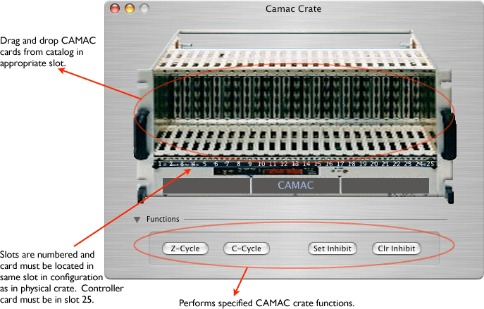

The CAMAC crate icon looks like this in the configuration:

Here's a view of the CAMAC crate dialog. Double-clicking a card will open up that card's dialog. Cards can be dragged from slot to slot. Selected cards can be deleted with Ctrl-X or the delete key.
The crate will not allow multiple cards to occupy the same slot and the card must be in the same slot in the configuration as in the actual physical crate.